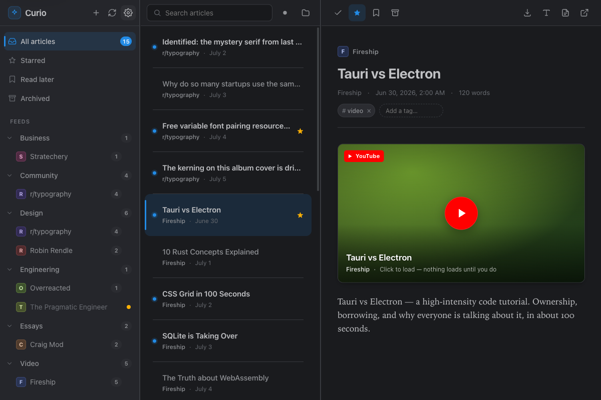

Your reading,
in your notes.
Curio is a local-first desktop reader for RSS, Atom and read-later. It treats your notes as the destination, not a silo — everything you save becomes plain markdown you own, and how you read is an append-only event log your own tools can replay. No accounts, no telemetry, no phone-home.
$ brew install --cask alexnodeland/tap/curio
